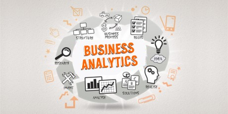

<<<<<<< HEAD
<<<<<<< HEAD
 >>>>>>> ef5bebf8e266d5c8564a2b8b80f83a60fe41e51e
>>>>>>> ef5bebf8e266d5c8564a2b8b80f83a60fe41e51e
 =======
"topic-04-Business-Analytics/index.html">
<<<<<<< HEAD
=======
"topic-04-Business-Analytics/index.html">
<<<<<<< HEAD
>>>>>>> 41db1b8cbaa8a299a35b3bb139217b4a41ce521c
=======
CA_2018
Topics
>>>>>>> ef5bebf8e266d5c8564a2b8b80f83a60fe41e51e
Continuous assessment
Details of the requirement and expected deliverables for your continuous assessment, along with marking scheme.
Introduction to Business Analytics

Analytics skills are essential for many roles in Software Development today. This topic will introduce you to the concepts, use and application of analytics in todays businesses.
Data Mining Process CRISP DM
Any data analysis project should follow a methodology to ensure successful completion.
Data Discovery using Excel
Excel has extensive functions, charts, and statistical analysis capabilities. You will be introduced to some of these tools in these labs.
<<<<<<< HEAD
=======
Business analytics
Operational analytics is becoming the holy grail for business analytics.
Business analytics
Charting and Dashboards
=======
"topic-04-Business-Analytics/index.html">
Operational analytics is becoming the holy grail for business analytics.
>>>>>>> ef5bebf8e266d5c8564a2b8b80f83a60fe41e51eCreating good visual displays
======= >>>>>>> ef5bebf8e266d5c8564a2b8b80f83a60fe41e51e